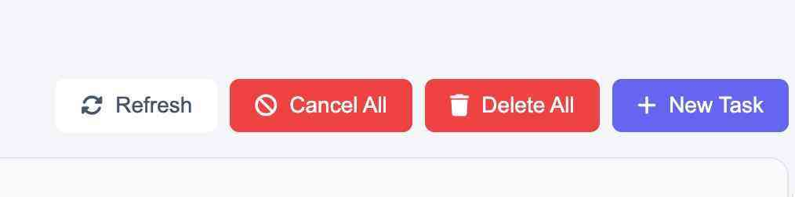
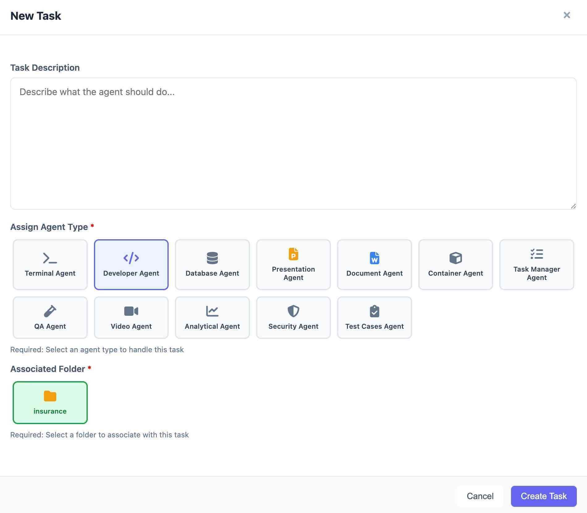

Tasks
Tasks dashboard is the high-velocity command center where your project requirements are translated into actionable development steps. It provides a real-time audit trail of every operation performed by the AI agents—from deep-system analysis to front-end code implementation.
Key Navigation & Controls
- Status Filters: Easily toggle between Pending, In Progress, Completed, and Failed tasks to monitor project health.
-
Global Actions:
- Refresh: Sync the task queue with current agent activity.
- Cancel/Delete All: Manage your task history and halt active processes.
- + New Task: Manually trigger a new objective, such as a code fix or a new feature request.
Anatomy of a Task Card
Every task provides deep transparency into the AI's "thought process" and execution:
| Feature | Description |
|---|---|
| Prompt Overview | Displays the specific instruction being executed (e.g., "Perform a comprehensive gap analysis"). |
| Agent Assignment | Identifies which specialized agent is working on the task (e.g., Analytical Agent, Task Manager Agent, or Developer Agent). |
| Context Badges | Shows the specific project folder (e.g., studytool) and the date of execution. |
| Execution Phase | Blue information boxes break down complex, multi-phase plans (e.g., "This plan was created in 10 phases") to show exactly how the AI is approaching the problem. |
| Output Type | Special badges like Analysis (purple) or Code (blue) indicate the nature of the task's result. |
Powerful Management Features
- Gap Analysis & Auditing: The system can automatically compare your Existing Schema against your Concept Design to identify missing tables or logic gaps.
- Subtask Branching: Use the + New Subtask button to decompose large architectural goals into granular, manageable technical steps.
- Version Tracking: Icons for Edit, Rerun, and Delete allow you to iterate on specific prompts until the output matches your exact vision.
- File-Level Inspection: Tasks provide a transparent look at the specific files being read or modified, including file paths and sizes (e.g., authController.js - 17290 bytes).
Task Controls found in the upper right corner of the Project Tasks dashboard. They allow you to manage the entire AI agent queue with a single click.

Refresh
- Function: Manually updates the task list.
- When to use: If you've just submitted a task or are waiting for an agent to finish a complex coding operation, hit Refresh to see the most current status (e.g., moving from "In Progress" to "Completed").
Cancel All
- Function: Immediately halts all active and pending agent operations.
- When to use: Use this if you realize a prompt was incorrect or if the AI is heading in a technical direction you want to pivot away from. It prevents the system from wasting resources on tasks you no longer need.
Delete All
- Function: Clears your entire task history from the dashboard.
- When to use: Best for "cleaning house" once a major milestone—like the TransparencySeal core architecture—is finished and verified. Note: This action is permanent and clears the audit trail.
+ New Task
- Function: Opens the New Task modal.
- When to use: This is your primary entry point for delegating work. Use it to trigger everything from a simple UI change to a massive database audit.
Creating a New Task
The New Task modal is where you delegate specific objectives to specialized AI agents. To ensure the best results, you must provide a clear description, select the appropriate agent for the job, and associate the task with the correct project folder.

Components of New Task window:
1. Task Description
This text area is for your natural language instructions.
- Be Specific: Instead of saying "Fix the login," try "Fix the authentication logic in authController.js to prevent duplicate session tokens."
- Reference Assets: Mention specific database tables, UI components, or documentation files you want the agent to consider.
2. Assign Agent Type
Selecting the right "specialist" ensures the AI uses the correct toolset for the job.
| Agent | Primary Responsibility |
|---|---|
| Terminal Agent | Executes command-line instructions, installs dependencies, and manages file systems. |
| Developer Agent | Writes, refactors, and debugs application code (HTML, CSS, JS, etc.). |
| Database Agent | Manages schemas, writes SQL queries, and handles data migrations. |
| Presentation Agent | Focuses on UI/UX layouts, slide decks, and visual concept assets. |
| Document Agent | Drafts and updates Functional Specs, Technical Specs, and User Manuals. |
| Container Agent | Orchestrates Docker/Kubernetes settings and deployment environments. |
| Task Manager Agent | High-level planning; breaks down complex goals into a multi-phase roadmap. |
| QA Agent | Performs quality assurance, identifies UI inconsistencies, and checks logic flows. |
| Video Agent | Generates video tutorials or walkthroughs based on project state. |
| Analytical Agent | Performs "Read-Only" deep dives, such as Gap Analysis or security audits. |
| Security Agent | Scans for vulnerabilities and ensures encryption/authentication compliance. |
| Test Cases Agent | Automatically generates unit tests and end-to-end testing scripts. |
3. Associated Folder
Choose the project directory where the agent should focus its work.
- In your current view, the "selected project" folder is selected.
- This ensures the agent doesn't pull context from unrelated projects, keeping the current project's logic separate from other builds.
Final Actions
- Cancel: Discards the draft and returns you to the Project Tasks dashboard.
- Create Task: Submits the prompt to the AI queue. You can track its progress immediately on the main dashboard under the Pending or In Progress tabs.